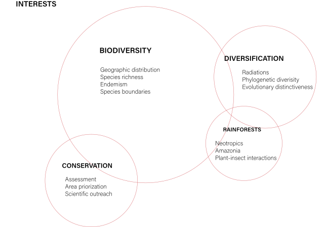
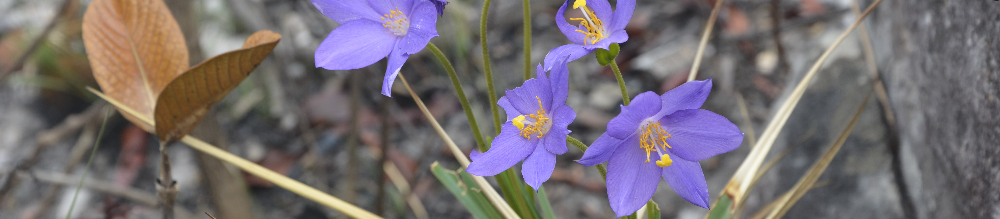

"Discovery consists of seeing what everybody has seen and thinking what nobody has thought"
- Szent-Györgyi
Sobre
Meu nome é Raquel C. Pizzardo e atualmente sou aluna de doutorado
no departamento de Ecologia e Biologia Evolutiva da Universidade de Michigan nos Estados Unidos.
Formação
2022-present PhD em Ecologia e Evolução, University of Michigan, USA.
2021-2022 MSc. em Ecologia e Evolução, University of Michigan, USA
2017-2021 BSc. em Ciências Biológicas, Universidade de São Paulo, SP, Brazil.
Biografia
Meu interesse em pesquisa começou quando eu era caloura na Universidade
de São Paulo e fui aluna das disciplinas de genética e botânica. Minha primeira experiência
nessa área foi como técnica em um laboratório de Ecologia e Genética Evolutiva, onde eu
auxiliava alunos de pós-graduação em seus projetos. Depois disso, para perseguir minha
fascinação por botânica, me tornei membro do Laboratório de Sistemática, Evolução e Biogeografia de Plantas Vasculares.
Meu primeiro projeto, na Iniciação Cientifica, era medir o impacto de mudanças
climáticas na flora de campo rupestre, um ecossistema único no leste do Brasil.
Desde então, durante minha carreira como pesquisadora, estive interessada em explorar a
relação entre distribuição geográfica, processos evolutivos e diversificação, focando em
sistemas de montanhas e expandindo para o campo da conservação biológica.
Colaboração internacional com o Royal Botanic Garden, Kew, no
Reino Unido, me permitiu trabalhar de forma competente no campo da conservação biológica e
a desenvolver habilidades significativas em Divulgação Científica. Atualmente, estou
trabalhando com diferentes abordagens para incorporar história evolutiva em políticas de
conservação, focando em ambientes com diversificações rápidas e recentes.
Atualmente sou aluna de doutorado e meu objetivo principal é explorar os impulsionadores da diversificação de uma família
arbórea dominante na Amazônia, considerando diferentes processos e suas consequências para a atual estrutura de comunidades.
Aprecio expedições de campo bem como diversas atividades ao ar livre. Como botânica, gosto de
passar meu tempo livre em parques, sempre acompanhada pelo meu gato e uma boa xícara de café.
Pesquisa

Experiência
Mundanças climáticas e ambientes naturalmente fragmentados Orientadora: Thais N. C. Vasconcelos
Um dos maiores desafios na conservação é a definição de áreas prioritárias para a conservação
efetiva de biodiversidade no cenário das mudanças climáticas. Por conta da estreita relação dos
organismos com seu ambiente físico, áreas de elevada riqueza de espécies e endemismo são
particularmente suscetíveis de perda de biodiversidade resultante da destruição antropogênica.
Isso pode ser particularmente difícil quando considerados ambientes naturalmente fragmentados,
como a Cadeia do Espinhaço no leste do Brasil, uma cadeia de montanhas com altos valores de riqueza
de espécies e endemismo.
Para acessar o quanto a distribuição de espécies endêmicas da cadeia será afetada pelos cenários
preditos de mudanças climáticas, eu construí modelos de distribuição de espécies para diferentes
espécies que diferem em sua distribuição. Essa abordagem corrobora com estudos prévios que sugerem
que a flora endêmica da Cadeia do Espinhaço está sobre séria ameaça.
Avaliação de risco, singularidade evolutiva e sistemas de montanhas. Orientadora: Thais N. C. Vasconcelos; Co-orientadora: Eimear NicLughadha
Diversidade global está sobre extrema pressão por consequência da atividade humana, sendo a perda
de diversidade vegetal particularmente notável. Abordagens que consideram hot spots de
biodiversidade, bem como áreas de endemismo, são comumente usadas para identificar regiões
para conservação. Entretanto, mesmo que esse seja um método efetivo, conservar a história
evolutiva é agora também importante, exigindo novas análises que incorporem esse aspecto.
Cadeias de montanhas têm chamado atenção pela impressionante biodiversidade, e o alto numero de
espécies e endemismo resultado de radiações rápidas e recentes. Nesse projeto, estou interessada
em avaliar a conservação da história evolutiva de um ambiente particularmente diverso no Brasil,
o campo rupestre e suas montanhas associadas.
Para avaliar isso, performei os métodos EDGE ( Evolutionary Distinct and Globally
Endangered) e Diversidade Filogenética para o clado Chamaecrista ser.
Coriaceae. Com essa abordagem, somos agora capazes de entender a história evolutiva
desse grupo e os desafios em aplicar politicas de conservação que liguem esses fatores em um
ambiente megadiverso.
Meu trabalho foi financiado pela Fundação de Amparo à Pesquisa do Estado
de São Paulo (FAPESP).
O papel dos processos evolutivos na formação de comunidades de árvores dominantes na floresta amazônica. Orientador: Dr. Christopher Dick; Co-orientador: Dr. Stephen Smith
Atualmente, estou estudando a estrutura filogenética da comunidade na subfamília Chrysophylloideae de Sapotaceae para entender os padrões locais de coevolução e pretendo responder aos seguintes tipos de questões:
(1) Como os clados de Chrysophylloideae se reuniram na região Neotropical?; (2) Para espécies de Chrysophylloideae, qual é o nível de divergência genômica e funcional em toda a bacia amazônica?; (3) Qual é o papel
das interações planta-inseto na definição das diferenças de nicho entre espécies coexistentes localmente? Este trabalho envolverá análises filogenéticas e bioquímicas.
Publicações
Por favor, me mande um email se quiser acessar as versões em pdf.
4 Pizzardo RC, NicLughadha E, Rando JG, Forest F, Walker B, Prochazka L, Nogueira A, Vasconcelos TNC (2024).
An assessment of methods to combine evolutionary history and conservation: a study case in the Brazilian campo rupestre.
Applications in Plant Sciences. Link
3 Prochazka L, Alcantara S, Rando JG, Vasconcelos TNC, Pizzardo RC, Nogueira A (2024).
Resource Availability and Disturbance Frequency Shape Plant Life Forms in Neotropical Habitats. New Phytologist. Link
2 BFG – The Brazilian Flora Group, Pizzardo RC, et al. (2021). Flora of Brazil 2020. 1-28pp. Jardim Botânico do Rio de Janeiro, Rido de Janeiro.
1Pizzardo RC, Vasconcelos TNC, Nogueira A, Prochazka L, Cota MMT, Rando JG (2021).
Field Guide: Espinhaço Range and Chapada dos Veadeiros, BRAZIL - Chamaecrista ser. Coriaceae (Fabaceae) of
campo rupestre. Field Museum.
Apresentações Selecionadas
2024"Sapotaceae across time and space: a taxonomic and historical biogeographic perspective” (speaker).
International Botanical Congress 2024 (Madrid - Spain)
2022 “Phylogenetic incongruence in an important tropical tree family, Sapotaceae, based on target sequence captured nuclear and plastome genes” (speaker).
Botany 2022 (Anchorage – AK, USA).
2020 & 2021 "Conservando a história evolutiva de radiações rápidas e recentes: um estudo com um clado endêmico em campos rupestres" (oral). 28º Simpósio Internacional de
Iniciação Científica e Tecnológica da USP (virtual).
2020 "Conservando a história evolutiva de radiações rápidas e recentes: um estudo com Chamaecrista ser. Coriaceae (Fabaceae) em campos rupestres"
(video-pôster). I Simpósio Digital de Sistemática e Evolução de Plantas (virtual).
2019 “Avaliando o impacto das mudanças climáticas em uma flora megadiversa: o futuro de Paepalanthus Mart. (Eriocaulaceae) na Cadeia do Espinhaço” (pôster & oral).
70° Congresso Nacional de Botânica (Maceió – AL, Brasil).
2019 “Avaliando o impacto das mudanças climáticas em uma flora megadiversa: o futuro de Paepalanthus Mart. (Eriocaulaceae) na Cadeia do Espinhaço” (pôster).
39° Encontro Regional de Botânica (MG, ES e BA; Diamantina - MG, Brasil).
Ensino e Divulgação

Experiência em ensino
2023 (fall term)Graduate Student Instructor em “Evolution” (University of Michigan, USA)
2021 (outono)Graduate Student Instructor na disciplina Introdução à Laboratório de Biologia (Universidade de Michigan, EUA). Mintrei aulas de laboratório
e auxilei alunos em atividades extra-classe.
2019 & 2020 (dois semestres) Monitoria no curso de graduação “Diversidade e Evolução de
Organismos Fotossintetizante” (Universidade de São Paulo, Brasil). Auxílio na preparação e
apresentação de aulas práticas e suporte de alunos durante atividades e estudos extra-classe.
2018 Monitoria no curso de graduação “Genética" (Universidade de São Paulo, Brasil).
Auxílio na preparação de aulas práticas com Drosophila e suporte de alunos durante
atividades e estudos extra-classe.